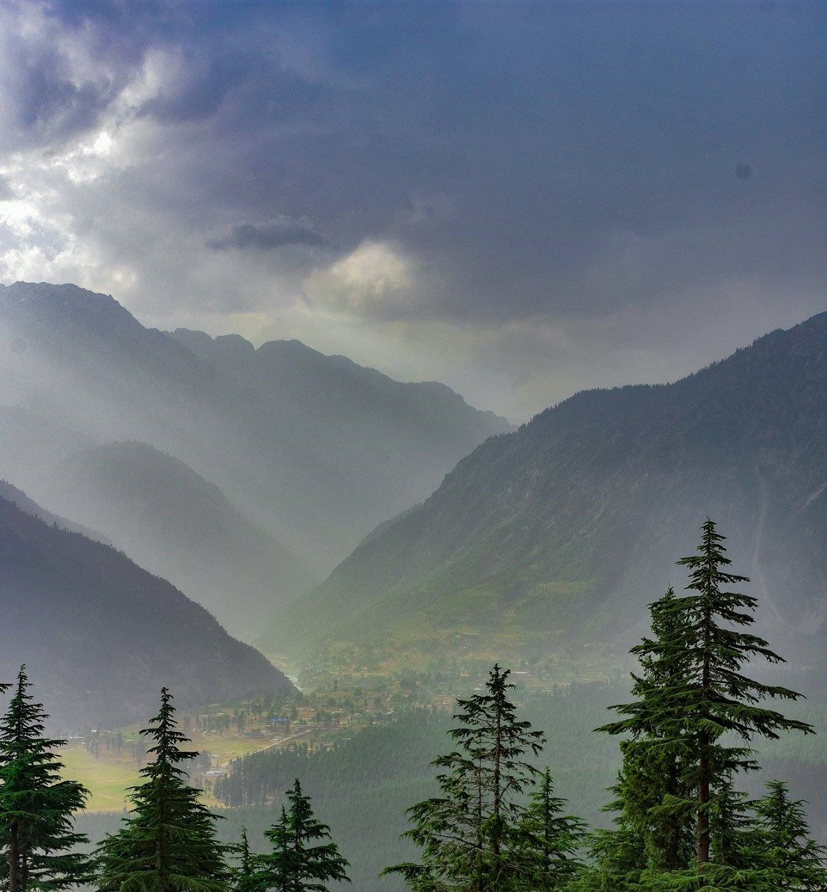

Some of the major languages spoken in the swat valley area are Pushto and Kohistani. Nowadays Urdu and English are also spoken by the locals.

From March till October, Swat has the best season for tourism. The valley welcomes the people through its magnificent mountains, lush green forests, running streams and meadows.
The major attractions of the Swat valley include its archeology, the lush green sites, the history and their art.